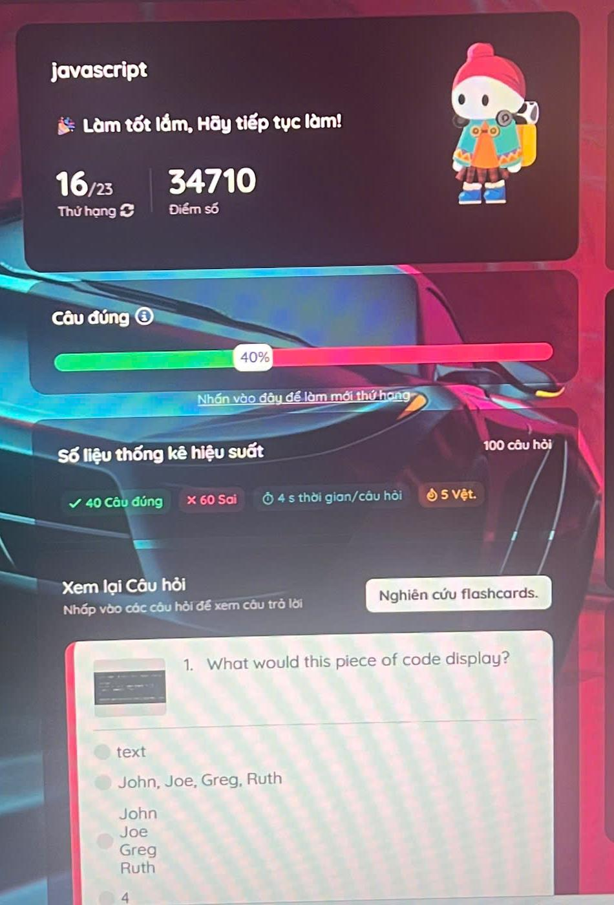

BÀI TẬP WEB · JAVASCRIPT
Một vòng
ký ức lung linh.
Đèn kéo quân mang theo những khoảnh khắc yêu thích. Chạm vào một mặt đèn để dừng lại, ngắm nhìn câu chuyện bên trong.
XEM ĐÈN KÉO QUÂN0102
01 / BÀI TẬP TRƯỚC
Tiếp nối hành trình.
Mỗi bài tập là một bước nhỏ trên con đường học cách tạo nên trải nghiệm trên web.

BÀI TẬP 38 · KẾT QUẢ QUIZIZZJavaScript · QuizizzNhấn để xem ảnh kết quả Bài 38Ảnh kết quả do bạn gửi; source của Bài 38 chưa có trong repo.
02 / BÀI TẬP 39 · TƯƠNG TÁC JAVASCRIPT
Đèn kéo quân.
Sáu mặt đèn xoay chậm trong không gian. Rê chuột vào ảnh để tạm dừng; nhấn nút nếu bạn đang dùng màn hình cảm ứng.
ĐANG NGẮM NHÌNMột vòng ký ứcChọn một mặt đèn để xem câu chuyện.
ĐÈN ĐANG QUAY
GHI CHÚ Sáu ảnh hiện tại là ảnh minh họa từ album Bài 30. Hãy thay bằng ảnh do bạn tự chụp trước khi nộp bài; hướng dẫn đổi ảnh ở README.md.
39
NGƯỜI THỰC HIỆN
Võ Văn Quốc Bảo
Người học lập trình web, yêu thích thiết kế giao diện và biến ý tưởng thành sản phẩm số.
ẢNH CHỤP MÀN HÌNH KẾT QUẢ ↗
MÃ SINH VIÊN231a290036BÀI TẬP 39 · JAVASCRIPT